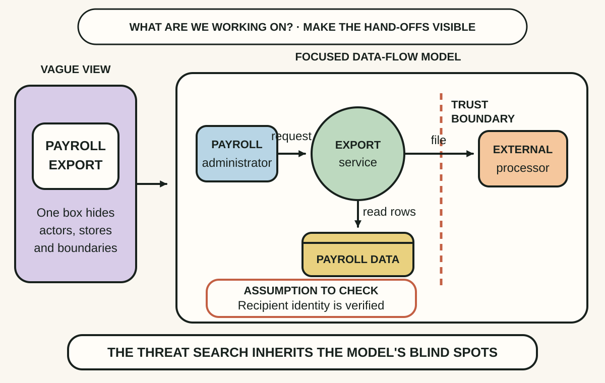
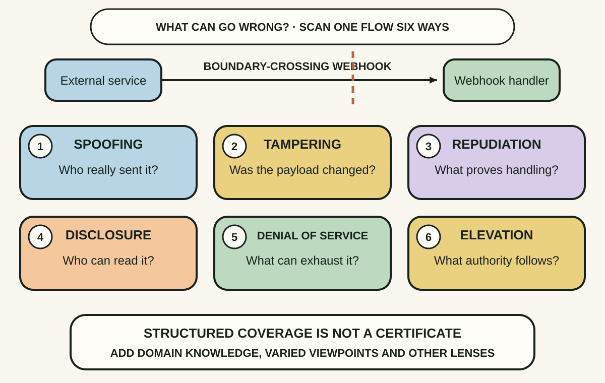
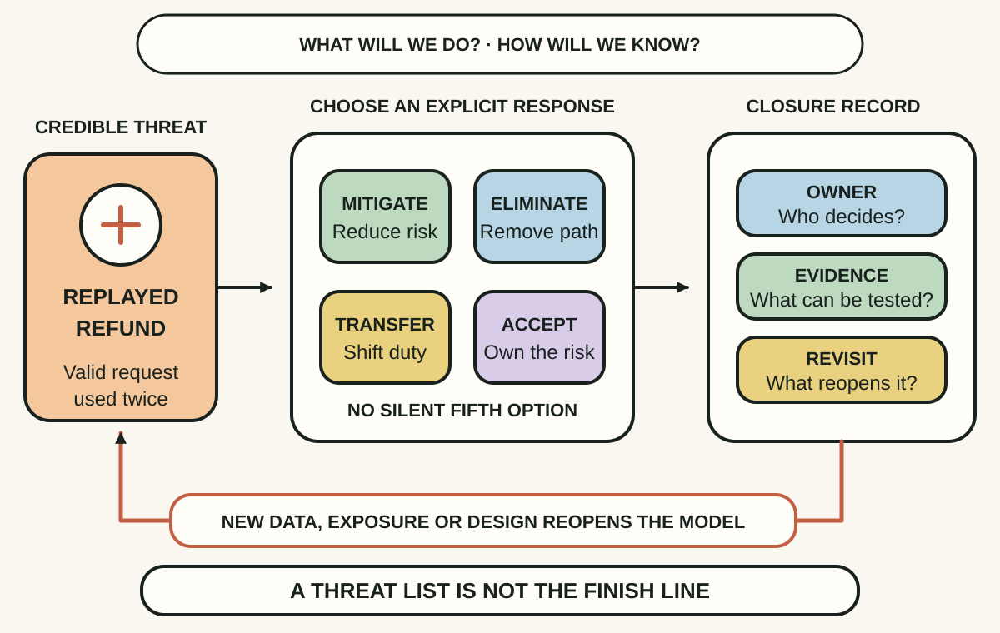

Daily lesson ·
Threat Modeling: Designing for Security
Make security design concrete by drawing the system that exists, scanning it with disciplined questions and closing each credible threat with an owned decision that can be checked.
Idea 1
Model the system before naming its threats #
The idea
Shostack begins software-centric threat modeling with a deceptively simple question: What are we working on? A useful answer is often a data-flow diagram that shows external actors, processes, data stores, flows and the trust boundaries where control or assumptions change.
The model is not decoration. It gives developers, testers, security specialists and product participants a shared object to challenge, while written assumptions expose beliefs that would otherwise remain invisible.

Why it matters
Security failures often hide in hand-offs: a background job, export, administrator path, vendor call or store that nobody included in the first description. Making boundaries and flows explicit gives the team somewhere precise to ask what can go wrong.
Apply it today
Choose one change small enough to explain in a minute. Draw its initiator, processing step, data store or destination, and the data moving between them.
Mark each point where identity, ownership, network, privilege or data sensitivity changes. Write one assumption beside the boundary you trust least.
Caveat or failure mode
No diagram is a complete or uniquely correct representation. A polished but stale model can create false confidence, and data-flow diagrams may understate business logic, human behaviour or lifecycle concerns. Keep the scope manageable and add another view when it reveals a different risk.
Idea 2
Use STRIDE to make imagination systematic #
The idea
Shostack uses STRIDE as a structured prompt for what can go wrong: spoofing, tampering, repudiation, information disclosure, denial of service and elevation of privilege. Walking those categories across relevant elements and flows reduces reliance on whichever attack happens to occur first to the loudest person in the room.
The technique connects each threat category to a security property, such as authentication, integrity, confidentiality or availability. It turns a broad request to think like an attacker into smaller questions that software teams can inspect and record.

Why it matters
Unstructured security reviews can fixate on data theft while overlooking replay, privilege escalation, denial of service or the inability to establish what happened. A common set of prompts makes omissions easier to notice and discussion easier to repeat.
Apply it today
Take one flow from your model and scan it once with each STRIDE category. Phrase every plausible finding as a specific failure, not merely the category name.
Invite one person with a different role to challenge the list. Capture their added threat or the assumption that explains why it is out of scope.
Caveat or failure mode
STRIDE is a discovery aid, not a proof of completeness or a numerical risk model. Its usefulness depends on the model and questions supplied; privacy harms, business-logic abuse, supply-chain compromise and domain-specific hazards may require other representations and expertise.
Idea 3
Close every credible threat with a decision and a test #
The idea
Shostack's third question asks what the team will do about each threat. The available responses include mitigating it, eliminating the exposed feature or path, transferring responsibility through an appropriate arrangement, or explicitly accepting the risk. Findings should become trackable work rather than remain admiration for the problem.
The fourth question asks whether the team did a good job. That means checking the model and threat coverage, recording assumptions and decisions, and validating that chosen mitigations can be measured or tested rather than merely named.

Why it matters
A long threat list can create anxiety without improving the product. Linking each important finding to an owned decision and observable result converts design insight into implementation, testing or consciously governed risk.
Apply it today
Choose the most credible threat from your scan. Decide whether to mitigate, eliminate, transfer or accept it, and name the person or role authorised to own that decision.
Write one observable check and one revisit trigger, such as a new data type, external exposure, privilege change, failed control or architecture revision.
Caveat or failure mode
Risk acceptance is not a synonym for ignoring work and transfer rarely removes accountability. Controls can introduce usability, reliability or operational risks of their own, so validation must inspect the resulting system and the model must change when its assumptions do.
Knowledge check · 6 questions
Learning check
Answer all 6, then check your answers. Your first result stays in this browser, and each explanation appears after you check. A 3-question review can appear on the homepage from tomorrow.
6 questions not yet answered.
Today's experiment · 10 minutes
Close one small threat-modeling loop
- Pick one current change and draw its actor, process, store or destination, data flow and nearest trust boundary.
- Scan one boundary-crossing flow with all six STRIDE prompts and write the single most credible failure.
- Choose mitigate, eliminate, transfer or accept; then name the decision owner and one observable check.
- Record one assumption and one system change that must reopen this threat model.
Observable result: You finish with a focused system model and one security decision that has an owner, evidence and a reason to be revisited.
Retrieval practice
Spaced recall
- From Working Effectively with Legacy Code: which seam would let you test a security response before changing the riskiest code path?
- From Designing Data-Intensive Applications: how could a mixed-version deployment invalidate one trust or message-handling assumption in this model?
Verification
Source notes
These links support the attributed claims and edition details; applications and extensions are labelled in the lesson.
One-sentence takeaway